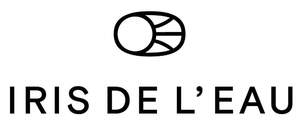

Trade Mark Journal No.2025/032 8 August 2025
UK00004241321 29 July 2025 (14,16,25)

- Class 14
- Earrings; Earrings of precious metal; Clip earrings; Necklaces; Silver earrings; Gold earrings; Earrings made of precious metal; Bracelets; Ear studs; Pierced earrings; Drop earrings; Hoop earrings; Gold plated earrings; Silver-plated earrings; Silver-plated necklaces; Silver-plated bracelets; Silver necklaces; Silver bracelets; Silver; Silver rings; Gold bracelets; Jewelry clips for adapting pierced earrings to clip-on earrings; Scarf clips being jewelry; Rings [jewellery]; Engagement rings; Gold rings; Gold plated rings; Gold necklaces; Gold; Gold chains; Gold jewellery; Silver-plated rings; Gold alloys; Gold and its alloys; Wedding rings; Wedding bands; Jewellery; Platinum rings; Platinum [metal]; Platinum jewelry; Platinum alloys; Rings of precious metal; Rings coated with precious metals; Rings [jewellery] made of precious metal; Necklaces [jewellery]; Pendants [jewellery]; Necklaces of precious metal; Bangle bracelets; Bracelets [jewellery]; Bangles; Ankle bracelets; Jewellery chain of precious metal for anklets; Jewellery rope chain for anklets; Cufflinks; Boxes for cufflinks; Brooches [jewellery]; Pins [jewellery]; Lapel pins of precious metals [jewellery]; Chains [jewellery]; Clasps for jewelry; Ornaments [jewellery]; Charms [jewellery]; Bracelet charms; Necklace charms; Jewellery charms; Jewellery chains; Chains made of precious metals [jewellery]; Medallions made of precious metals; Medallions [jewellery, jewelry (Am.)]; Jewellery products; Jewellery boxes; Jewellery cases; Jewelry caskets; Jewellery of yellow amber; Silver thread [jewellery]; Gold thread [jewellery]; Jewellery made from silver; Jewellery made from gold; Diamond jewelry; Diamonds; Cut diamonds; Pearls [jewellery]; Trinkets [jewellery]; Jewellery incorporating precious stones; Articles of jewellery with precious stones; Articles of jewellery with ornamental stones; Jewellery made of precious stones; Semi-finished articles of precious stones for use in the manufacture of jewellery; Jewellery stones; Precious stones; Jewellery cases of precious metal; Jewellery caskets of precious metal; Jewellery articles; Jewellery being articles of precious stones; Jewellery fashioned of semi-precious stones; Jewellery incorporating pearls; Jewellery fashioned of cultured pearls; Enamelled jewellery; Jewellery for pets; Pet jewelry; Jewelry organizer rolls for travel; Jewelry rolls for travel; Jewelry organizer cases; Jewelry rolls for storage; Works of art of precious metal; Metal works of art [precious metal]; Sculptures made from precious metal; Ornamental sculptures made of precious metal; Ornamental figurines made of precious metal; Bridal headpieces in the nature of tiaras; Dress ornaments in the nature of jewellery; Tiaras; Cuff-links; Medallions; Pendants; Jewels; Amulets; Medals; Charms; Jewellery for personal adornment; Personal jewellery; Clasps for jewellery; Jewellery for personal wear; Decorative pins [jewellery]; Parts and fittings for jewellery.
- Class 16
- Printed books; Printed picture books; Books; Visitors books; Guest books; Travel books; Educational books; Index books; Painting books; Graphic art books; Picture books; Information books.
- Class 25
- Cuffs; Collars; Boot cuffs; Neckbands; Scarfs; Neckties; Scarves; Silk scarves; Head scarves; Neck scarves; Cashmere scarves; Women's ceremonial dresses; Veils; Shoulder scarves.
IRIS AGISTRIOTI
Representative: GEORGIOS PERIVOLARIS